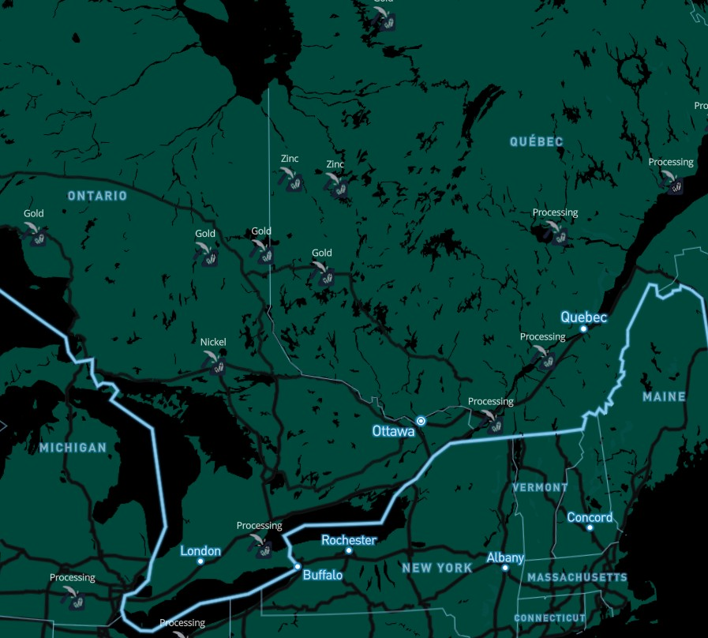
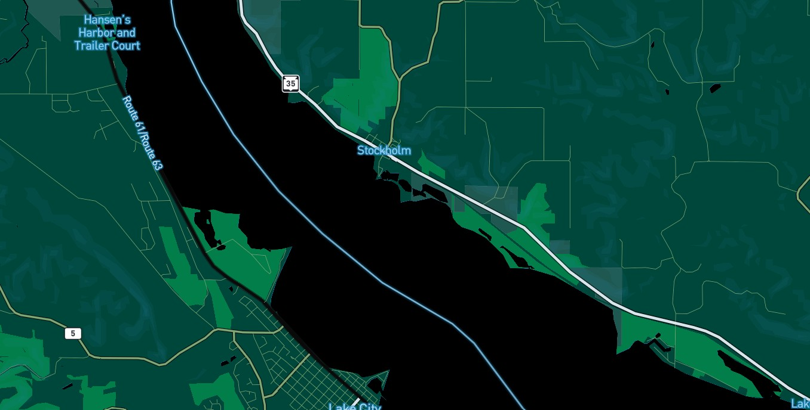
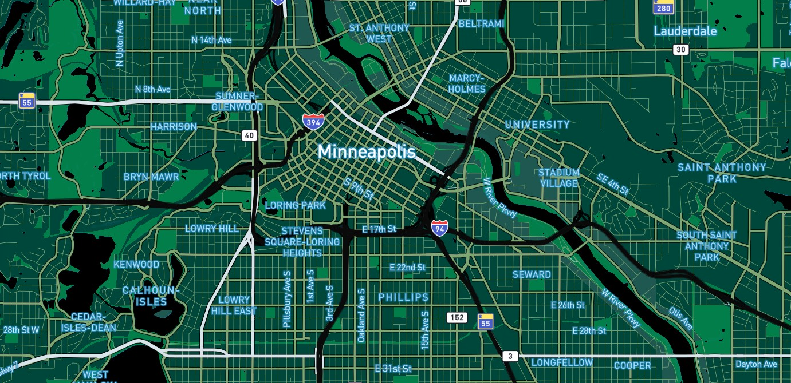
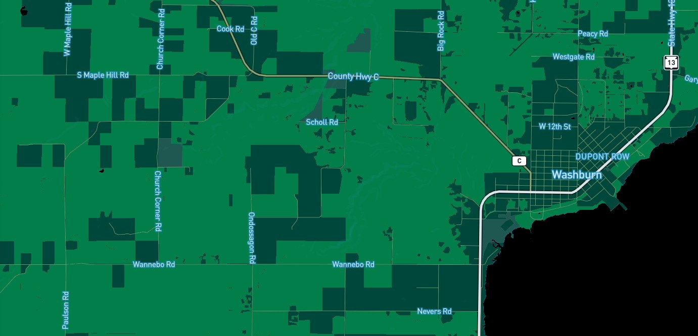
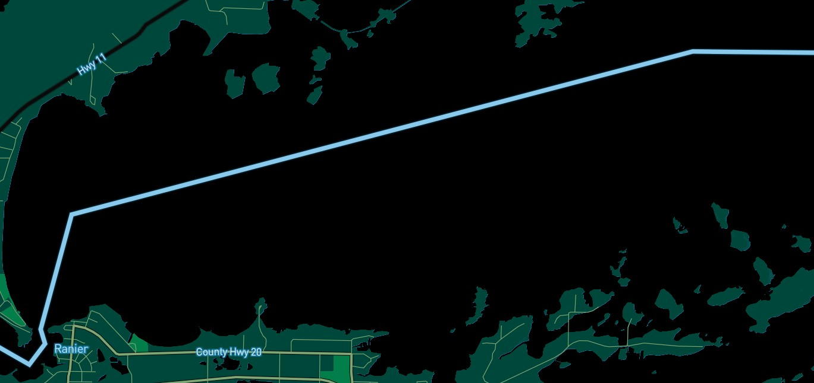

Earthboard
My style is called Earthboard and is based on the motherboard found in our computers.
I drew inspiration from chipware and print circuit boards.
In the map, pickaxes represent metal mining and processing locations for common circuit board parts.

The map "fabricates" as you zoom in.




Take a look at a few different geographies, starting with Stockholm, Wisconsin.
Minneapolis, Minnesota is a very well fabricated city board!
Rural Washburn, Wisconsin.
Boundary Waters, Minnesota.
Play around the full map.
Credits:
Map created with Mapbox Studio
Data from openstreetmap
Metals procurement dataset from Jasansky, Simon et al. (DOI: 10.1038/s41597-023-01965-y), 2023